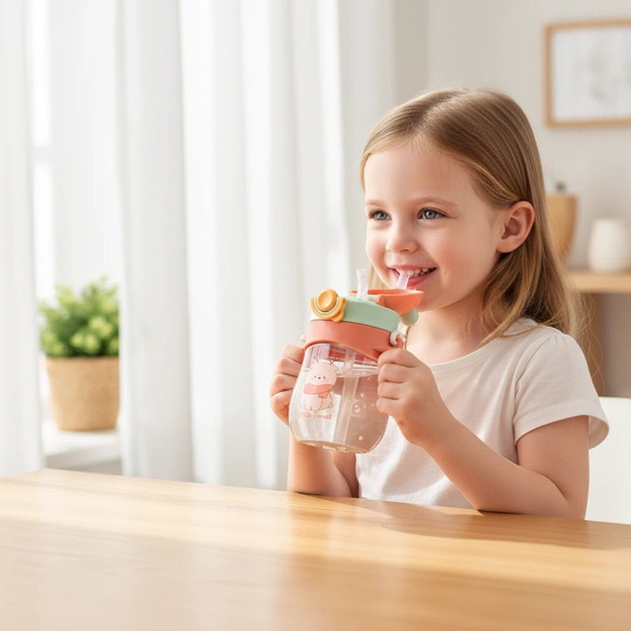
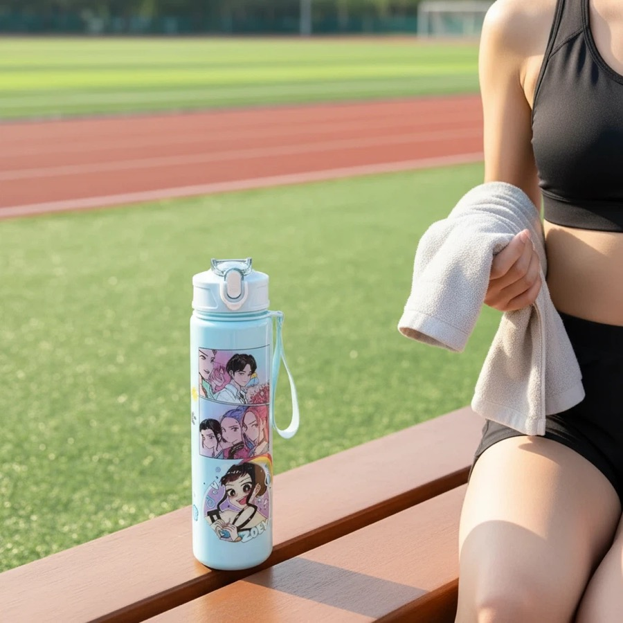

Kids Water Bottle Customization
Schools, family retail buyers and gift companies that need kids-friendly bottle styles, colors and packaging.
Custom drinkware sourcing guide
HDS Drinkware, the export brand of Shanxi Huandingsheng Industry and Trade Co., Ltd., coordinates kids water bottle customization for schools, family retail buyers, gift companies and promotional buyers. This page covers the product, MOQ, sample, packaging, QC and shipping decisions specific to that buying intent.


Schools, family retail buyers and gift companies that need kids-friendly bottle styles, colors and packaging.
This page avoids competing with adult sports or corporate bottle pages. Selected stock-based logo projects may start from around 200 pcs; final MOQ and scope are confirmed in the quotation.
Kids bottle selection should begin with the intended age group and channel. School gifts, family retail and promotional programs may use different capacities, lid and straw routes, straps, decorative parts, artwork, labels and packaging; each component and accessible accessory should be reviewed for the exact SKU.
For Custom Kids Water Bottles, low MOQ is available on selected models. The exact minimum depends on the product, color, decoration, packaging and production route; custom colors and complex customization normally require a higher project-specific minimum.
Kids bottle routes can include PP, PC, PETG or selected stainless steel bodies with project-specific lids, straws, gaskets, straps and decorative parts. Material, age-use, labeling and documentation requirements must be confirmed for the exact SKU and destination market.
Logo customization support includes laser engraving, silk screen printing, UV printing, heat transfer, labels and packaging logo placement. The best method depends on product surface, artwork colors and buyer channel.
A kids bottle project can include sample review of dimensions, lid and straw fit, agreed leakage checks, edges and accessible parts, strap or accessory attachment, print and logo position, packaging, labels and carton protection. Product safety and compliance testing are arranged only to a written destination-market scope.
Product comparison
| Option | Best For | Customization Focus | Buyer Notes |
|---|---|---|---|
| Entry test order | New sellers and first projects | Stock color, simple logo, standard packing | Useful when the buyer needs to validate demand with lower inventory pressure. |
| Private label order | schools, family retail buyers, gift companies and promotional buyers | Logo, color, packaging, barcode and carton marks | Better for buyers who need a repeatable product line. |
| Gift packaging order | Gift companies and corporate buyers | Gift box, insert, card, tote bag and bundle planning | Presentation and sample approval should be confirmed early. |
| Wholesale repeat order | Distributors and wholesale buyers | Stable product, mixed colors, cartons and shipping plan | Best when reorder timing and carton data matter. |
Direct buyer answer
Start with the intended age group and use. Verify the exact body, lid, straw and gasket materials; accessible accessories; logo or character-artwork rights; packaging and labels; and destination-market evidence. Approve the exact sample before bulk production.
| Decision | Confirm in Writing | Verify on the Sample | Why It Matters |
|---|---|---|---|
| Intended user | Age group, school, retail, gift or promotional scenario | Capacity, dimensions and handling route | The use scenario changes product and labeling decisions |
| Components | Body, lid, straw, gasket, strap and decorative-part materials | Fit, finish, edges and accessible attachments | A body-material claim does not cover every component |
| Function | Drinking route and agreed leakage or lid checks | Assembly, operation and written test scope | Generic claims are weaker than an approved sample and criteria |
| Artwork | Buyer-owned logo or licensed character assets | Print position, legibility and approved proof | Supplier images do not grant intellectual-property rights |
| Market evidence | Required documents, tests, warnings and labels by destination | Traceability between evidence and quoted SKU | Requirements vary by product, age use and market |
No category-wide statement should replace product evidence. The BPA-free requirement and available documentation should be checked for the exact body, lid and straw materials, quoted SKU, intended use and destination market.
Send the intended age group, product photo, capacity, quantity and color split, logo or licensed artwork, packaging and labeling request, destination, required delivery date and any test or document requirement.
| Method | Best Use | Strength | Notes |
|---|---|---|---|
| Laser engraving | Stainless steel and premium gifts | Durable, clean and professional | Good for corporate and private label positioning. |
| Silk screen printing | Simple logos and larger runs | Clear and cost-effective | Works best with simpler artwork. |
| UV printing | Color logos and detailed artwork | Better visual detail | Sample review is recommended before bulk order. |
| Label or packaging branding | Fast tests and gift sets | Flexible and practical | Useful when buyers want branding without complex setup. |
| Packaging | Best For | Support Details |
|---|---|---|
| Standard box | Samples and wholesale orders | Basic protection and practical carton packing. |
| Color box | Amazon, Shopify and retail channels | Can support barcode, brand information and product presentation. |
| Gift box | Corporate gifts and holiday programs | Can coordinate inserts, cards, sleeves and custom box print. |
| Custom bundle packaging | Gift companies and promotional buyers | Can combine drinkware, cards, tote bags, labels and carton marks. |
Custom Kids Water Bottles for Schools, Gifts and Retail Programs is intended for schools, family retail buyers, gift companies and promotional buyers. Schools, family retail buyers and gift companies that need kids-friendly bottle styles, colors and packaging. HDS uses the buyer's channel, quantity, destination and launch timing to narrow the product, sample, packaging and shipping route.
Quote and sample checklist
Send these details together and the sales team can compare realistic product, logo, packaging and shipping options faster.
Verify the intended age group, capacity, body and component materials, lid and straw structure, accessible accessories, logo or artwork rights, packaging, labels and destination-market evidence. Approve the exact sample before bulk production.
No category-wide claim should replace product evidence. HDS can discuss the BPA-free requirement and available documentation for the exact quoted body, lid and straw materials, but the buyer should match the evidence to the selected SKU, intended use and destination market.
MOQ for selected custom kids water bottles for schools, gifts and retail programs projects may start from around 200 pcs. Final MOQ depends on product style, material, color, logo method, packaging and current supply availability.
HDS can discuss kids plastic bottles, cartoon bottles, straw bottles and school gift drinkware by capacity, material, color, finish, lid, accessories, logo method and packaging requirement.
Material options include PP, PC, PETG and selected stainless steel kids bottle options. The suitable option depends on the target market, use case, compliance request and price range.
Send a product photo or reference link, quantity, logo file, packaging request, destination country and target delivery time. These details help HDS prepare a more relevant quotation.
This page is written for schools, family retail buyers, gift companies and promotional buyers who need custom drinkware sourcing, logo customization, packaging support and export coordination from China.
Custom water bottles with logo | Custom plastic water bottles | Custom sports water bottles | Drinkware quality control | Packaging options
Send your product photo, quantity, logo requirement, packaging request and destination country. HDS will help recommend suitable product options, logo methods, packaging solutions and shipping terms for your project.